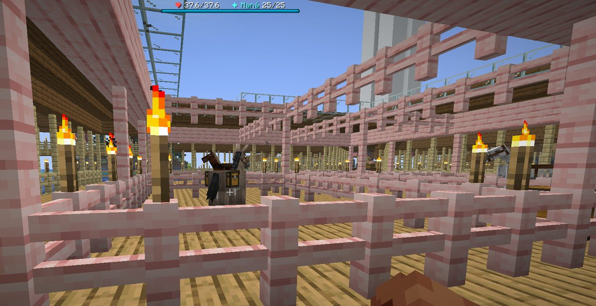
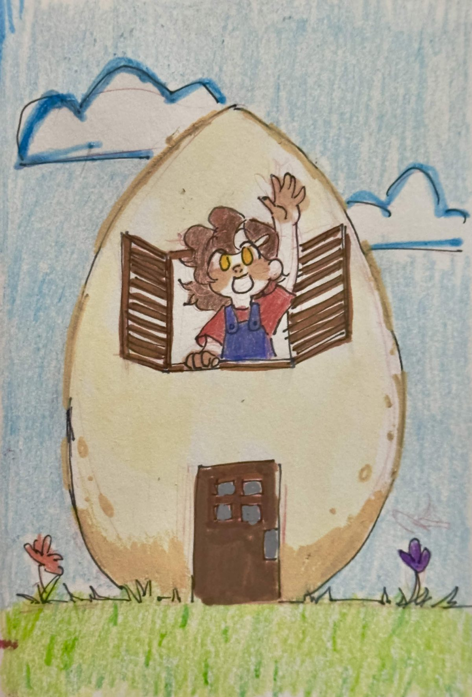

Boletín Oficial del Ayuntamiento del Reino · Se informa, no se alarma
EL HERALDO DEL REINO
Número 425 de agosto de 2026Noche del martes 25 al miércoles 26 de agosto
LA ÚNICA DENUNCIA QUE ENTRÓ POR REGISTRO EN TODA LA JORNADA FUE POR UNA BURRA
Hubo ocho vecinos muertos a manos de otros vecinos, una revuelta con lava dentro de una casa ajena, ciento treinta y cinco defunciones y un ministro plantado en mitad de la plaza. Nada de eso llegó por escrito. Lo que sí llegó, firmado y con fotografía adjunta, fue una denuncia por el trato dado a un animal de tiro.
Redactado por la Oficina de Prensa del Ayuntamiento
PORTADA
Una denuncia, una burra y un desmentido que no había pedido nadie

El establo de Mazitrvrs, aportado como prueba por el denunciante. Consta de seis corrales, ochenta y cuatro antorchas, dos plantas y una rampa. Dentro hay un animal. El Ayuntamiento hace notar que el edificio es, con diferencia, la construcción más cuidada del expediente, y que eso es precisamente lo que más ha llamado la atención de todo el mundo.
Archivo Municipal · pase el ratón para revelarla
A las 06:50 de la mañana entró por registro el único escrito formal de toda la
jornada. Lo firmaba Rockchango, adjuntaba fotografía y decía, palabra por
palabra, que Mazitrvrs mantenía a su esposa «encerrada de tal manera que no puede
salir ni hablar».
La Oficina de Convivencia se personó, comprobó el corral y estableció que el sujeto de
la denuncia es una burra. Con eso, el asunto habría quedado archivado en el mismo
trámite.
Once minutos después, a las 07:01, y sin que se le hubiera dado traslado
de nada, el denunciado remitió por su cuenta la siguiente declaración:
«Quiero dejar por medio de esta declaración que no tengo ninguna relación con
el burro más que dueño y animal de trabajo. No usaría jamás un animal para fines
románticos.»
Esta Oficina la publica íntegra, como está obligada, y hace constar dos cosas. La
primera, que en la denuncia no se mencionaban fines románticos. La segunda, que
hasta ese momento tampoco los había mencionado nadie más.
El expediente 0049 queda abierto y se remite, como todo, al gobierno en
funciones. Mientras tanto, y por si sirve de algo, el mismo vecino recibió esa misma
mañana licencia favorable por otra obra. Ver Urbanismo.
SUCESOS
Dieciocho segundos que dejaron cuatro caídos y una casa inundada
lLuqqa y GabbyQuill635, fotografiados por _Cafecito_ a las 06:00, cuando ya todo había pasado. Ella tenía ocho corazones. Él, treinta y cinco. Esta Oficina se limita a consignar los números y no extrae de ellos ninguna conclusión sobre lo justo del reparto.
Archivo Municipal · pase el ratón para revelarla
La jornada registró ocho defunciones causadas por vecinos, la cifra más alta
desde que existe el Reino. Seis de ellas ocurrieron en menos de veinte segundos.
El orden, según el registro: a las 05:36 murió Mazitrvrs a manos de
LetayReaver, sin que nadie se enterase. A las 05:52 murió
GabbyQuill635, a manos de lLuqqa. A las 05:53 murió
TitanWarhammer, a manos de GabbyQuill635, que ya había vuelto. Y entonces
llegó ArsarFurro a poner orden.
ArsarFurro mató a lLuqqa a las 05:53. Mató a TitanWarhammer a las 05:54.
Y mató, también a las 05:54, a GabbyQuill635, que era exactamente la persona a la
que venía a defender. Cuarenta y seis segundos separan su primer «asesinooooo» de haber
cometido la mitad de los homicidios de la jornada.
Nada de esto pasó en casa de ninguno de ellos. Pasó en casa de NARUMl, que no
participó, y que perdió en el intercambio la mitad de las vacas, todos los pollos, el
segundo piso, la flor y la entrada, que apareció con agua y lava a partes
iguales. Su intervención completa en el suceso, textual, fue:
«Peleen en otro lado, no en mi casa. No me importa.»
Demaxxp, que llevaba cuatro minutos en el Reino, preguntó si aquello era «el
primer juicio civil». Esta Oficina ha comprobado el organigrama y comunica que el
Reino no dispone de juzgado, que crearlo corresponde al gobierno en funciones y que el
gobierno en funciones sigue sin pronunciarse. En consecuencia, el primer juicio civil del
Reino ha quedado convocado y no puede celebrarse.
Consta además, del turno de madrugada, que a las 00:36 el mismo lLuqqa acabó con
TitanWarhammer empleando una pera. El arma obra en el expediente.
URBANISMO
Expediente 0050 — «Planos oficiales», de GabbyQuill635

Documentación técnica presentada. Escala: ninguna. Cotas: ninguna. Nubes: dos. El apartado «orientación de la fachada» se ha resuelto saludando.
Archivo Municipal · pase el ratón para revelarla
A las 07:14, GabbyQuill635 presentó ante esta Oficina lo que denominó
«planos oficiales» de su vivienda. La Oficina de Urbanismo agradece que sea la
primera vez en la historia del Reino que alguien presenta documentación antes de
construir, y lamenta tener que decir lo siguiente.
El inmueble proyectado tiene forma de huevo. Un solo hueco de fachada, con
contraventanas de madera, a una altura que no se especifica. Una puerta con cuatro
cuarterones. Y a la altura del primer piso, asomada al hueco y saludando, la propia
promotora, lo que este departamento entiende como un intento de anticiparse a la
inspección.
Se hacen constar dos defectos. El primero es que no se aprecia acceso a la planta
superior. El segundo es que el conjunto está coloreado a lápiz, incluido el
cielo. En descargo de la promotora, la vivienda es la única del expediente en la que se ha
dibujado a alguien contento.
Calificación: NO ES UN PLANO, ES UN RETRATO. Se requiere subsanación. Se conserva
el original.
URBANISMO
Expediente 0051 — «El obelisco y los puentes», de Mazitrvrs
El promotor, recorriendo su propia obra a lomos de un cerdo y con armadura completa. La Oficina hace constar que el animal no es el del expediente 0049 y que este dato tampoco se lo ha pedido nadie.
Archivo Municipal · pase el ratón para revelarla
A las 08:11, el mismo vecino que a las 07:01 remitía una declaración sobre sus
intenciones respecto de los animales comunicó que el obelisco y los puentes estaban
prácticamente listos.
La inspección confirma: pasarela de tablón sobre el agua, dos ramales de barandilla,
iluminación cada seis metros y un obelisco blanco que se ve desde el otro lado del
mar. La obra une. Es lo segundo que este vecino construye que une algo, después de
La Unión de Caminos, y esta Oficina empieza a considerar que no es casualidad.
Calificación: FAVORABLE. Es el segundo de la historia del Reino y los dos
son suyos. La Oficina de Urbanismo quiere dejar dicho que le resulta profundamente incómodo
conceder una licencia favorable y abrir un expediente de convivencia a la misma persona
en la misma mañana, y que si el vecindario tiene alguna sugerencia sobre cómo se
resuelve eso, la dirija al gobierno en funciones.
SERVICIOS
Nadie ha vuelto a quejarse del precio de las mochilas
Lucía Mochilón, titular del despacho de mochilas, atendiendo. La fotografía se publica sin retocar. Esta Oficina ha valorado retocarla.
Archivo Municipal · pase el ratón para revelarla
Consta reclamación verbal de Mazitrvrs, formulada a las 17:43 con estas
palabras:
«Iba a comentar algo sobre el precio de las mochilas… luego vi la cara de
quien las vende.»
El Negociado de Atención al Vecino confirma que no se ha registrado ninguna otra
queja sobre las tarifas del servicio desde su apertura, y que tampoco se había
registrado ninguna antes. Se atribuye el dato a la eficacia del personal.
La funcionaria Lucía Mochilón lleva el despacho en solitario, mantiene el
inventario al día y no ha faltado un solo turno, que es bastante más de lo que puede decirse
de otros puestos de este Ayuntamiento (ver Administración). Este boletín aprovecha
para recordar que el trato correcto al personal municipal es obligatorio y que el
aspecto de quien atiende no figura entre los motivos válidos de reclamación.
ANOMALÍAS
Un animal apareció colgado de una cuerda dentro de una vivienda
La llama, a media altura y sin apoyo, en el interior de la casa de _Cafecito_. El Negociado de Ganadería sostiene que estaba atada. La vecina sostiene otra cosa.
Archivo Municipal · pase el ratón para revelarla
A las 11:08, _Cafecito_ comunicó que un animal se estaba ahorcando en
su casa. Aportó dos fotografías. En ambas se aprecia una llama suspendida de una
cuerda, a metro y medio del suelo, dentro de una habitación de piedra, con las patas
cruzadas.
El Negociado de Ganadería ha examinado el material y sostiene que se trata de un animal
correctamente atado a un poste que en ese momento no estaba, y que la posición de las
patas es habitual en la especie. Preguntado por qué es habitual, el Negociado ha
remitido la consulta al Negociado de Ganadería.
Se atribuye el suceso a un desplazamiento de contornos de los que esta Oficina
viene informando desde el primer número. Es rutinario, no reviste gravedad y no guarda
relación alguna con lo anterior. El animal se encuentra bien.
ANOMALÍAS
Vuelve a faltar carbón, y esta vez también faltan patatas
Tres denuncias verbales en la misma jornada. Jooan786, a las 22:46,
preguntando quién le había pisado los cultivos. LetayReaver, un minuto después,
ampliando el objeto de la sustracción a «carbón, pandas, hornos, madera y cultivos».
Y LetayReaver otra vez, a las 06:41, esta vez con inventario cerrado: las
patatas, el carbón y la mitad de las vacas.
Interpelado al respecto, el Ministro Pan mantuvo la línea del Ministerio sin
variación: «el carbón del horno yo sigo manteniendo que es Chavito el que lo roba».
Y acto seguido, en el mismo intervalo y sin que mediara consulta, elevó la recompensa por
su captura de dos semillas a cuatro.
Esta Oficina hace constar que xTheChavitox no estuvo en el Reino en toda la
jornada. También hace constar que la recompensa ha subido igual.
ANOMALÍAS
Entran cerdos ardiendo por los pasos del subsuelo
Diez defunciones de la jornada —la cuarta causa— corresponden a porcinos
incandescentes procedentes del otro lado. NARUMl emitió a las 13:32 el
único aviso útil que se ha dado sobre el asunto:
«Dato no menos importante: no se puede dejar un paso abierto, se vienen
los chanchos a este mundo.»
El Negociado de Fronteras califica el fenómeno de tránsito irregular de ganado y
recuerda que la responsabilidad de cerrar el paso corresponde a quien lo abre. Se estudia la
implantación de un impreso de cierre. La misma vecina recomendó horas después no
bajar ahí «hasta nivel treinta», lo que este Ayuntamiento no suscribe pero tampoco
desmiente.
ADMINISTRACIÓN
Aparece una nota manuscrita del Ministro sobre el mercado de espadas
Se ha hallado, y obra ya en el archivo, una nota de puño y letra del Ministro
Pan. No la ha aportado nadie: apareció. El texto describe un plan en tres pasos.
Uno. Comprar todas las espadas del Reino, pagándolas al precio que
pidan y sin regatear, «que regatear levanta sospechas». Dos. Esperar. La nota calcula cuatro días y aclara que puede esperar más,
porque «el Ministerio no tiene prisa, el Ministerio tiene presupuesto». Tres. Venderlas. La nota no dice a cuánto. Dice: «a lo que valgan entonces», y
debajo hay una raya y un número que el archivero ha preferido no transcribir.
El Ministerio ha remitido un desmentido en el que sostiene que la letra no es
suya, que la nota podría ser de cualquiera y que comprar cosas no es delito. Esta
Oficina recoge el desmentido y hace constar que en ningún momento se había dicho que lo
fuera.
Se hacen constar, además, dos datos que están en este mismo boletín y que el Ayuntamiento
pone seguidos sin extraer conclusión alguna: que el Ministro elevó de dos a cuatro
semillas la recompensa por un vecino ausente, y que pagó diez cacahuates por un
pingüino sin discutir el precio, lo que el vendedor calificó en el acto de «vaya
emprendimiento».
Queda abierto el expediente 0052, que es el octavo del Ministro Pan. Los
ocho, a la espera de que se pronuncie el gobierno en funciones.
ADMINISTRACIÓN
Media docena de vecinos llevaban semanas trabajando sin darse de alta
A la 01:30, TitanWarhammer preguntó en la plaza cuál era el trámite para
inscribirse en un oficio. El Ministro Pan respondió que no existe tal trámite
y que todo se gestiona con los impresos que reparte el Ayuntamiento.
La respuesta del vecindario fue inmediata. NARUMl: «pero si yo ayer lo usé».
Mazitrvrs facilitó por escrito la vía exacta. SerSM15 confirmó que llevaba
días dado de alta como minero. Y NARUMl cerró el asunto con una confesión
colectiva:
«Nos hemos apuntado todos. Perdón.»
El Ministerio reaccionó con un aviso que esta Oficina reproduce por su valor disuasorio:
«dos meses haciendo encargos para que se lo pongan por la vía rápida», seguido de
«vaya bomba les va a caer en casa», y rematado con la advertencia de que si se
hace revisión de trabajo y no están dados de alta, caerá multa.
El Ayuntamiento hace notar que la vía irregular ha quedado cerrada en el último
cierre técnico, y que el registro de méritos permite identificar sin esfuerzo a quienes la
usaron: constan El Nuevo Fichaje a nombre de lLuqqa, Demaxxp y paps2507; Recursos
Humanos a nombre de esos mismos tres; y Plan de Carrera a nombre de Mariowo_,
TitanWarhammer y NARUMl. La multa está pendiente de que se pronuncie el gobierno en
funciones, como todo.
ADMINISTRACIÓN
Cuarta jornada sin Fátima, y una inscripción que el censo no admitió
Fátima no acudió a su puesto. Es la cuarta jornada consecutiva. El
expediente sigue abierto, nadie la ha visto y este boletín ya no tiene nada nuevo que
añadir, que es exactamente lo que se dijo la vez anterior.
Se hace constar además que el censo rechazó una inscripción presentada por un
conocido de NARUMl: el impreso volvió con la mención «sesión inválida», que
este Ayuntamiento no sabe interpretar y que consta igualmente. Y que Rahazzi, ya
inscrito desde la jornada anterior, olvidó la fórmula de paso de la muralla y estuvo
fuera hasta las 14:56, cuando alguien se la recordó. Al entrar dijo: «gracias, los
quiero mucho». Se archiva.
SOCIEDAD
Tres altas nuevas, y una oficina de acogida que no ha autorizado nadie
La jornada registró tres altas, la cifra más alta desde la apertura:
lLuqqa a las 23:19, friunyxxx a las 04:02 y paps2507 a las 12:58.
Al tercero lo recibió _Cafecito_, que sin encomendarse a nadie le explicó la
brújula, dónde se recogen los encargos, cómo se elige oficio, dónde puede levantar casa y
qué zonas están protegidas; le advirtió de que un hacha derriba una casa de madera
entera, lo que sabe por experiencia propia y reciente; y se ofreció a ayudarle si la
veía por ahí. Duró hora y media y no cobró nada.
El recién llegado declaró a los cuarenta minutos: «este Reino es increíble, mano»,
y a los cincuenta: «me volveré adicto probablemente». Preguntó también quién era el
Emperador. Se le explicó. Su respuesta, sin haberlo visto nunca y sin que fuera a verlo esa
jornada ni en las tres anteriores, fue: «Duke es mi ídolo».
Este Ayuntamiento se ve en la obligación de señalar que la acogida de nuevos vecinos
es competencia municipal, que existe un impreso para ello, que nadie lo ha usado nunca y
que la vecina _Cafecito_ lleva tres jornadas ejerciéndola sin nombramiento, sin sueldo y
notablemente mejor.
SOCIEDAD
El corral tenía cartel, valla y todo, menos caballo
«Caballo de Naru (No robar)». La fotografía la tomó el Ministerio y la aportó al expediente. El corral está en perfecto estado.
Archivo Municipal · pase el ratón para revelarla
Entre las incidencias comunicadas por NARUMl en la misma tanda en la que informó
de la casa inundada, las vacas muertas y la flor perdida, figuraba también que se le
había perdido un caballo. La frase con la que lo comunicó fue: «vivo de
desgracias».
El Ministerio se personó, fotografió el corral y lo aportó al archivo. El corral tiene
valla de dos alturas, comedero, iluminación, un cerezo detrás y un cartel que dice, con
buena letra, «Caballo de Naru (No robar)». Lo que no tiene, en el momento de la
fotografía, es caballo.
El animal apareció a las 14:36. Consta que, mientras estuvo desaparecido,
un vecino distinto exhibió en la plaza un caballo que dijo que le habían regalado, y que la
propietaria contestó, textualmente, «es mío, si se muere que lo destierren». El
expediente se archiva sin más trámite, porque los dos animales eran el mismo y porque el
cartel funcionó.
EL EXTERIOR
El puerto del sur existe, tiene nombres y nadie los había apuntado
La expedición, tal y como se presentó ante el puerto: una rana en una barca. Al fondo, el Capitán Liu Qingdao, asomado a su ventana.
Archivo Municipal · pase el ratón para revelarla
NARUMl alcanzó a las 16:13 el fondeadero del acantilado del sur y aportó la
primera fotografía que obra en este archivo del asentamiento. En ella se leen cuatro
nombres: Capitán Liu Qingdao, Ling Mutombo, Ming Marea Baja y Bao
Loto Negro.
Ninguno de los cuatro figura en el padrón del Reino. Los cuatro llevan allí desde
antes de que existiera este boletín. El Ayuntamiento comunica que ha abierto el
correspondiente procedimiento de alta de oficio y que, hasta que se resuelva, sus
vecinos pueden comerciar con ellos con normalidad, dado que llevan haciéndolo meses.
Se hace constar que la vecina llegó hasta allí montada en una rana, en una barca,
y que este es el segundo número consecutivo en que esta Oficina tiene que escribir la
palabra rana en un contexto administrativo.
EL PARTE DEL PULSO
Veintiséis medidas correctoras, tres cierres técnicos y veinticinco encargos nuevos
El Reino registró tres cierres técnicos por revisión del pulso: a las
22:52, a las 13:56 y a las 14:49. El del mediodía se anunció con cinco
minutos de antelación por la vía de siempre, que es que alguien lo gritara en la plaza.
Al cabo de los tres, los encargos abiertos en el Reino han pasado de 274 a
299. Son veinticinco encargos nuevos, después de una jornada entera sin ninguno.
Entran, entre otros, los diez panfletos de Lucía, la catadura de brebajes de la
Alquimista —de los que esta Oficina advierte que uno mata—, el encargo del
pintor que cobra en pigmentos, la carta de Papriko a la universidad y una
ampliación del servicio de Correos, que ya estaba desbordado.
Las cuatro medidas gordas. Primera: se ha rebajado la agresividad de las
alimañas del camino. Las arañas envenenan menos y aguantan menos, y el trabuco de los
bandoleros hace medio corazón donde hacía cinco. Lo notó NARUMl a las 14:22 y
lo comunicó con la frase «puedo matar monstruos, qué feliz que estoy». Segunda: los
bandoleros disparaban al sitio donde ya no estabas, y se ha corregido. Tercera: se ha
ejecutado el control de cabras anunciado en el número anterior; el Ministerio cifra
en setenta y cuatro las reses retiradas y un vecino describió la operación como
«cayó una nuclear». Y cuarta: el Diario azul de los encargos ya dice qué hay que
hacer en 422 de sus 483 páginas, tras la reedición de la imprenta municipal.
Y las demás, que no revisten gravedad. Las camas volvieron a admitir titular ·
quien muere vuelve a despertar en la suya · el cofre del establo abría con una casilla de
más y por eso no abría · la mesa de encantar cobraba en moneda que no existe · las puertas
de Valdemojón y de Puerto Negro no se dejaban abrir por nadie, y tampoco las de los cuatro
doctores · los cuadros y los marcos podían descolgarse y llevarse · se restableció el paso
automático a los vecinos que lo tenían acreditado · el zurrón se estaba comiendo los libros
de encargo y la nota que dice qué hacer después · los objetos de encargo caídos al suelo
vuelven a desaparecer como cualquier otro · la mesa de cartografía ya dice quién entrega
cada mapa · las barras de vida de las alimañas dejaron de fallar · la Lectura Pública ya no
reparte nada raro · y las ratas de alcantarilla, que eran la criatura más abundante
del Reino y con el doble de densidad que ninguna otra, han quedado a densidad ordinaria.
Ninguna de las veintiséis reviste gravedad y todas estaban previstas.
♥ El Corazón del Reino ♥
LO QUE SE DICE EN LA PLAZA Y NADIE ESCRIBE
Sección de vida sentimental y asuntos del querer. Lo que aquí se publica consta en el archivo municipal. Lo que cada cual deduzca de ello, no.
EL CORAZÓN DEL REINO
El bigote de la fotografía
Se estrena esta sección a petición del vecindario, que lleva tres números pidiendo
saber cosas que no son de su incumbencia. El Ayuntamiento accede con la condición de dejar
claro que no afirma nada: se limita a describir lo que obra en el archivo y a no
entenderlo.
Obra en poder de esta Oficina una fotografía. En ella aparece Rockchango
acompañado de un señor mayor con bigote que no consta en el padrón, no figura en
ninguna alta y no ha sido visto por nadie más.
La imagen fue examinada por el técnico de guardia, que rellenó el primero de los
dieciséis apartados del impreso, escribió «vaya» en el margen y solicitó el traslado
a otro departamento. El apartado que dejó en blanco es el que pide describir la escena
con sus propias palabras.
Esta Oficina no reproduce la fotografía. No por prudencia: por la postura. El
archivo la clasifica bajo el epígrafe «dos personas y un accidente del terreno»,
que es el epígrafe que se usa cuando no hay accidente del terreno.
Se hace notar, y aquí se acaba la información y empieza la coincidencia, que
Rockchango presentó esa misma mañana la denuncia por el trato dado a la burra de un
vecino, y que la fotografía es de esa misma mañana. El Ayuntamiento no establece
relación entre ambos hechos. Los pone seguidos porque van seguidos en el registro.
EL CORAZÓN DEL REINO
Dos vecinas, una lámpara apagada y ninguna explicación
La segunda de las dos fotografías aportadas. En la primera se distingue a una de ellas. En ésta no se distingue prácticamente nada, y es, con mucho, la que más se ha comentado en la plaza.
Archivo Municipal · pase el ratón para revelarla
A las 07:03, _Cafecito_ comunicó al vecindario, sin que se lo hubiera
preguntado nadie, que ella y GabbyQuill635 estaban a oscuras. Aportó dos fotografías
como prueba de lo que no se ve en ellas.
El Negociado ha establecido lo siguiente. Que la sesión fotográfica se produjo hora y
cuarto después de que a GabbyQuill635 la mataran dos veces en veinte segundos. Que el
lugar no consta. Que la iluminación tampoco. Y que ninguna de las dos ha dado, ni se le ha
pedido, explicación alguna sobre qué se les había perdido a las dos juntas en un sitio
sin luz.
Este Ayuntamiento tiene por norma no entrar en la vida privada del vecindario y va a
seguir sin entrar, aunque sea la primera vez que le cuesta. Se limita a recordar que las
antorchas están a cuatro cacahuates la docena y que quien no las compra, no las compra
por algo.
Consta, por lo demás, que una hora después la misma vecina pidió prestado un
cubo a LetayReaver, que se lo llevó a casa en persona, y que la conversación
que mantuvieron mientras tanto incluye las expresiones «manita», «manito»,
«manitapro» y «tus manitas de bebé se están congelando». El préstamo se
formalizó sin recibo.
EL CORAZÓN DEL REINO
«Vení a buscar el hierro, mi amor»
Es la frase que lLuqqa dirigió a GabbyQuill635 a las 05:56, esto
es, cuatro minutos después de haberla matado. La frase completa, que esta Oficina
transcribe sin corregir, fue: «vení a buscar el hierro mi amor, lo tengo acá».
Un minuto antes había explicado la situación con estas otras palabras: «vinieron los
noviecitos virtuales a defenderla». Y un minuto después, ya más sereno, propuso un
procedimiento ordenado: «vengan de a uno la próxima».
Resumiendo, y solo para que quede constancia administrativa: en el intervalo de seis
minutos el mismo vecino ha matado a una vecina, ha llamado noviecitos a quienes salieron
a defenderla, la ha llamado a ella mi amor, le ha ofrecido hierro y ha
convocado a los demás de uno en uno.
El Ayuntamiento no dispone de un impreso para esto. Se ha abierto uno.
EL CORAZÓN DEL REINO
Lo que se haría por el Emperador ya no lo dice solo una persona
Desde el segundo número de este boletín, GabbyQuill635 viene declarando
públicamente lo que estaría dispuesta a hacer por el Emperador Duke. Lo declaró doce
veces seguidas en seis minutos, y esta Oficina lo recogió sin comentarlo.
Esta jornada ha aparecido un segundo declarante. A las 13:34, Rawson98
comunicó a la plaza: «Sueño con Duke y me despierto cansado». Nadie contestó. A la
13:35, en vista del silencio, amplió la declaración:
«Lo que yo haría por Duke no consta en ningún reglamento.»
Este Ayuntamiento ha verificado el extremo y confirma que, en efecto, no consta.
Se ha revisado el reglamento entero. No aparece. Tampoco aparece prohibido, que es lo
que preocupa.
Se recuerda por tercer número consecutivo que el Emperador no ha acudido, que no
contesta y que la última vez que dijo algo fue una línea para anunciar un cierre técnico.
Esta Oficina no opina sobre la correspondencia entre lo que se ofrece y lo que se recibe.
Se limita a hacer notar que ya son dos.
EL CORAZÓN DEL REINO
La casa de NARUMl vuelve a admitir huéspedes, y uno de ellos huele
Lo que había debajo de la casa. La vecina llevaba días muriendo sin saber por qué; resultó que el sótano no era un sótano. Se desalojó a la 01:00 y se le puso una puerta de recuerdo.
Archivo Municipal · pase el ratón para revelarla
A las 00:48, NARUMl comunicó que la figura conocida como
Esqueletreje se había mudado a su casa. Dijo textualmente: «vive mucha gente en mi
casa», valoró en voz alta ponerle nombre —«La posada de Naru»— y cobrar
alquiler, y acabó admitiendo que tendría que ampliar.
El huésped se presentó con equipaje: una gallina, un pico de segunda mano, los cofres
abiertos por dentro y una mascota llamada Felipe, que la anfitriona describió como
«que da miedo» y «que hace ruido feo» antes de aceptarla igualmente y hacerle un corral.
Sobre el olor, que es lo que ha llegado a esta Oficina por tres vías distintas, hay
declaraciones cruzadas. _Cafecito_ preguntó, sin rodeos, si era él «el que deja
con olor mi casa». La respuesta fue «sí». La misma vecina calificó después su
propia casa de «olor a limpio, algo con lo que no estás familiarizado», a lo que el
interesado replicó que la casa de NARUMl «huele como yo», y a la pregunta de a qué
huele exactamente respondió: «a Esqueletreje». Añadió que nació en un pantano.
El Negociado de Vida Vecinal considera el asunto una convivencia no declarada y
recuerda que toda alta de residencia debe comunicarse en el plazo de cinco días. No se ha
cursado requerimiento, principalmente porque no consta a nombre de quién habría que
cursarlo.
Oficina de Prensa · Negociado de Vida Sentimental
Espacio cedido · Ministerio de Construcciones del Reino
El cartel oficial, tal y como se ha repartido. Consta que lo dibujó alguien del Ministerio y que se le pagó con cargo a la partida de señalización viaria.
PRIMER CONCURSO DE VIVIENDAS DEL REINO
Este domingo 30. Quedan cuatro días. El Ayuntamiento quiere entrar en vuestras casas, verlas por dentro y tomar nota. Dice que es para valorar el esfuerzo vecinal.
Qué se valorará. La fachada, que no parezca hecha con materiales recogidos
durante una pelea. El interior: muebles, detalles y algo más que cofres apoyados
contra la pared. La utilidad —taller, almacén, huerto, cocina o cualquier cosa que
suba el precio por noche—. El encaje con el Reino, que combine con la ruina local sin
espantar al comprador. Y la originalidad: ideas que el Ayuntamiento pueda copiar sin
pagar derechos.
Durante la visita se tomará nota de ubicación, tamaño, vistas, decoración, accesos y
sótanos, así como de cualquier otro dato de utilidad para una empresa externa que,
oficialmente, no existe.
Habrá premio para el primer puesto. El Ayuntamiento aún está decidiendo si
llamarlo premio, ayuda vecinal o «bonificación por facilitar datos inmobiliarios de alto
valor».
Para preparar la casa, en Cerezal del Valdemojón hay una tienda de muebles
patrocinada por el Ayuntamiento. Casualidad absoluta. Comprad sillas, mesas, alfombras y
armarios: todo lo que haga vuestra casa más bonita y más fácil de alquilar por cantidades
ofensivas.
Aviso a los propietarios que hayan sufrido derribos esta semana. Se admiten
viviendas reconstruidas. El Ministerio es consciente de que hay vecinas que llevan cuatro
reconstrucciones en una sola noche y considera que eso, lejos de ser un demérito,
acredita experiencia en obra.
Ministerio de Construcciones del Reino · con supervisión del Ayuntamiento, que solo quiere mirar, medir y quedarse una copia
Suplemento de interés humano · se reparte gratis con este número
FUNDÓ UNA MILICIA, UN COMERCIO Y UNA FAMILIA EN LA MISMA NOCHE: LA JORNADA DE SerSM15
Tercera entrega de esta sección. El elegido es SerSM15 y el criterio vuelve a ser estrictamente objetivo: es el único vecino que en una sola jornada ha constituido una milicia, ha abierto un comercio de fauna exótica y ha dejado plantado a un ministro en mitad de la plaza. Esta Oficina no valora ninguna de las tres cosas. Las ordena.
Oficina de Prensa · Negociado de Vida Vecinal
LA FAMILIA
Bazuko, Bareta, Diomedez y un perro que sacó de un acantilado
La comitiva completa, a las 16:36. El vecino los nombró de izquierda a derecha y sin dudar, lo que en este Reino no es lo habitual.
Archivo Municipal · pase el ratón para revelarla
Lo primero que hay que decir de SerSM15 es que a los suyos les pone nombre.
No «el caballo». Bazuko. No «el burro». Bareta. Y Diomedez, y un perro
sin nombre todavía al que, según su propia declaración, salvó de un acantilado.
Esta Oficina ha comprobado el censo de animales de compañía y no consta ninguno de
los cuatro, lo que en cualquier otro expediente daría lugar a requerimiento. En éste no se
va a cursar: el Negociado ha considerado que quien baja a un acantilado a por un perro ya
ha hecho más papeleo del que este Ayuntamiento le podría exigir.
Se recuerda, no obstante, que el Reino tiene precedente en la materia y que no acabó
bien: la dinastía Patroclo se extinguió en dos horas y catorce minutos por no
inscribir al sucesor antes de entrar en servicio.
LA GALLETA
«Totalmente honrado de comer mi primera galleta reglamentaria»
La galleta, en el suelo de la oficina de Chester el Cartero del Reino. Consta que se la comió. No consta que se la ofrecieran.
Archivo Municipal · pase el ratón para revelarla
A las 17:12, el mismo vecino comunicó a la plaza que acababa de comer su
primera galleta reglamentaria y aportó fotografía tomada dentro de las dependencias
de Correos.
Este Ayuntamiento debe hacer dos precisiones. La primera es que no existe ninguna
galleta reglamentaria: no figura en el inventario, no tiene partida asignada y ningún
departamento ha comprado galletas nunca. La segunda es que el vecino la llamó reglamentaria
igualmente, y que a partir de ese momento tres vecinos más han preguntado dónde se
recogen.
La Oficina de Prensa propone crear la galleta reglamentaria, ya que existe en la
cabeza de todo el mundo y solo falta el impreso. La propuesta se ha remitido, como
corresponde, al gobierno en funciones.
(Sobre el titular del puesto y su expediente, este boletín se remite al número
anterior: hay cuatro carteros y una sola ficha de 1971, y ninguno de los cuatro se
habla con los otros. La galleta se la comió delante de uno de ellos. No se sabe de
cuál.)
EL NEGOCIO
Fundó una milicia, montó un comercio de pingüinos y dejó plantado a un ministro
00:29. Anuncia en la plaza que va a formar «una guerrilla para hacer limpieza
social de bandoleros», y aclara el propósito: «por y para el pueblo».
NARUMl se ofrece a alistarse pero duda de sobrevivir; se le contesta que sí,
«porque vamos a estar preparados». El Ayuntamiento no ha autorizado ninguna
milicia. Tampoco ha sido consultado.
01:33. Cambia de sector. Ofrece a la misma vecina «algo increíble,
extravagante, muy lindo pero agresivo», y se niega a decir qué es. Ella lo adivina a la
primera —«¿un pingüino?»— y él responde: «me jodiste todo el bussines». Al
preguntársele por la procedencia de la mercancía, declara: «un cargamento que me llegó
por Temu». Esta Oficina no dispone de información sobre esa vía de suministro y ha
renunciado a solicitarla.
15:49. Busca comprador. «Necesito un magnate que quiera una especie
exótica.» Aparece el Ministro Pan, que pregunta el precio. El vendedor le concede
el honor de fijarlo por ser «el primer cliente». El Ministro ofrece diez
cacahuates. El vendedor acepta al instante. El Ministro, desconcertado, deja constancia
de que le parece barato y le reprocha que no regatee: «vaya emprendimiento, Sermi».
Servicio a domicilio incluido.
15:54. El Ministro anuncia que lo espera en la plaza.
16:05. El Ministro comunica que sigue esperando.
16:06. El vendedor responde que «acaba de amanecer» y que viene enseguida
«con el socio». No consta socio alguno en ningún registro de este Ayuntamiento.
16:16. El Ministro Pan emite la siguiente declaración, que esta Oficina publica
íntegra por ser el único documento de la jornada en que un miembro del Gobierno del Reino se
reconoce perjudicado por un vecino:
«Me acaba de estafar. Se fue sin mi pingüino.»
El Negociado de Comercio hace constar que no existe registro mercantil en el
Reino, que por tanto la operación no consta, que el pingüino tampoco, y que a día de hoy
este es el único acuerdo comercial documentado de la historia del Reino. Terminó
así.
El parte de la jornada
Duración de la jornada
22 h 22 min, de las 20:36 a las 18:58
Vecinos en el Reino
18 (más el Ministro)
Altas tramitadas
3 — lLuqqa, friunyxxx y paps2507
Inscripciones rechazadas por el censo
1
Máxima concurrencia
11 a la vez, a las 05:51 de la mañana
Defunciones
135 — récord del Reino
Defunciones causadas por vecinos
8, seis de ellas en 18 segundos
Muertes por Bicha del granero
44 (la primera de todas, por segunda jornada)
Denuncias presentadas por escrito
1, por una burra
Desmentidos que no había pedido nadie
2 — el de la burra y el de la nota
Expedientes abiertos al Ministro
8
Juicios civiles convocados
1
Juicios civiles celebrables
0
Expedientes de obra
2 abiertos, 1 favorable (el segundo de la historia)
Viviendas derribadas por su propia dueña
4 y media
Animales hallados colgando de una cuerda
1
Encargos abiertos
299 — eran 274
Medidas correctoras
26
Cierres técnicos
3
Cabras retiradas en el control
74
Recompensa por xTheChavitox
4 semillas (eran 2)
Impuestos vigentes en el Reino
0
Acuerdos comerciales cerrados
1
Acuerdos comerciales cumplidos
0
Intervenciones del Emperador
0
Último vecino en marcharse
SerSM15, a las 18:58, sin entregar el pingüino
Aviso oficial
Por expresa petición del Ministerio, y sin que mediara pregunta, consulta ni denuncia de
clase alguna, se publican los siguientes desmentidos tal y como los mandó. Uno: que la
nota manuscrita hallada sobre el mercado de espadas no es de puño y letra del Ministro
Pan, que podría ser de cualquiera y que comprar cosas no es delito. Dos: que el
Ministro Pan sigue sin guardar relación con la figura conocida como Esqueletreje, a la
que no conoce, no ha visto nunca y sobre cuyo estado de ánimo se interesó públicamente a las
14:28. Esta Oficina lo recoge todo y hace constar que no se le acusaba de nada.
Se comunica que el Reino no dispone de juzgado y que, en consecuencia, el primer juicio
civil convocado en su historia no puede celebrarse. Los interesados serán avisados en
cuanto se pronuncie el gobierno en funciones. No se ha fijado fecha para que se pronuncie.
Queda convocada la jornada de inspección urbanística del domingo. Se recuerda una vez más
que la Oficina de Urbanismo sanciona mediante acta y que el acta no arde.
No se admiten reclamaciones por fotografías tomadas a oscuras, por perales empleados como arma
reglamentaria, por animales de compañía cuya especie no se recuerde en el momento de declarar,
ni por galletas que este Ayuntamiento no ha comprado, no ha repartido y a día de hoy no fabrica.